Software Defensibility in the era of AI coding
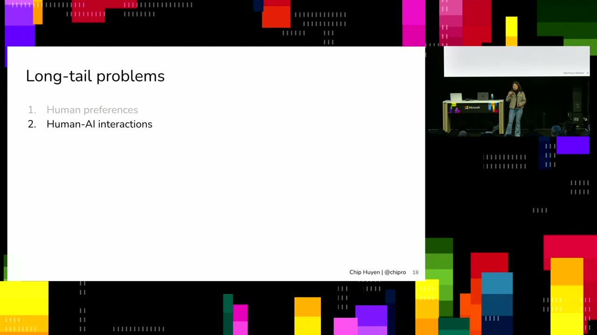
Official description
If the cost of building software is approaching 0, is the value of building software is also approaching 0? If most software can be easily replicated by AI, how can we defend our products after we've built it? This talk discusses what have traditionally been considered moats for software products, why they aren't really moats, and why we should, as builders, continue building. Seating for this session is first-come, first-served. Add it to your schedule to plan your day and arrive early to secure a spot.
Summary
Overview
Chip Huyen examines whether software retains value when AI drives the cost of building it toward zero, arguing that traditional moats—proprietary data, distribution, trust, expertise—are weaker than assumed because money can acquire most of them. The talk pivots to where durable value remains: long-tail problems frontier labs ignore, human-AI interaction design, and the emerging frontier of physical AI agents and robotics.
Topics covered
- Why falling software-building costs raise the question of whether software value also approaches zero, and the ease of replicating any shipped product with AI coding tools
- METR's benchmark showing the length of tasks AI can reliably complete (roughly 50% of the time) growing on a log scale toward multi-hour, complex work
- The "Ghibli moment" analogy: shipping software, like an art style, becomes a shorthand that makes replication easier
- Critique of supposed moats—proprietary data (commoditized via data-labeling firms), distribution (acquirable by buying incumbents), trust/branding (eroded by fast model-switching), expertise (must be encoded, then copyable), and momentum (an exhausting treadmill)
- Long-tail problems frontier labs deprioritize: non-English languages (Farsi, Arabic) and voice-chatbot latency across the speech-to-text, LLM, text-to-speech pipeline
- Human preference variation (RLHF assuming universal preference) and cultural differences in conversational response timing (West ~80ms vs. Vietnam ~200ms)
- Human-AI interaction design: terminal vs. IDE tradeoffs, hybrid desktop agents, running agents on cloud/servers, and mobile/Telegram control of coding agents
- Shift from code to specifications as the primary artifact ("specs-driven development") and the mismatch with code-review tooling built around code
- Making the environment AI-friendly: modularizing legacy codebases, API-first over GUI design, and city "street light APIs" for delivery robots
- Irreversibility and safety as design constraints (a deleted database, form submissions, money transfers, robot battery failures in elderly care)
- Physical AI agents as a continuation of digital agents, the gap in world modeling for physical understanding, and a personal "career audit" framework for measuring AI exposure
Notable quotes
"If the cost is 0, then the value is 0. So it makes me think about like... what should I be building?"
"Like money is a Moat, right? If you have money, you can just buy it."
"I think with the new AI coding, the artifact is no longer the code. Like GitHub was designed around code as the main artifact... but nowadays the main artifact actually is the instructions."
Products and tools mentioned
- Claude Code
- OpenAI Codex
- ChatGPT
- Anthropic Claude
- DeepSeek
- Qwen
- GitHub
- Salesforce
- QuickBooks
- Oracle
- Airtable
- Scale AI
- Surge AI [inferred]
- Mercor [inferred]
- METR
- Docker
- PostgreSQL
- Telegram
- Unitree G1 robot
- Onewheel
- MacBook
Speakers featured
- Chip Huyen — builder of AI systems; previously at NVIDIA and Snorkel AI, founder of a sold AI infrastructure startup, currently running a robotics company
Frames
{kind=link}
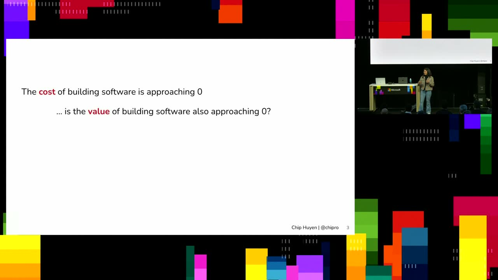
{kind=link}
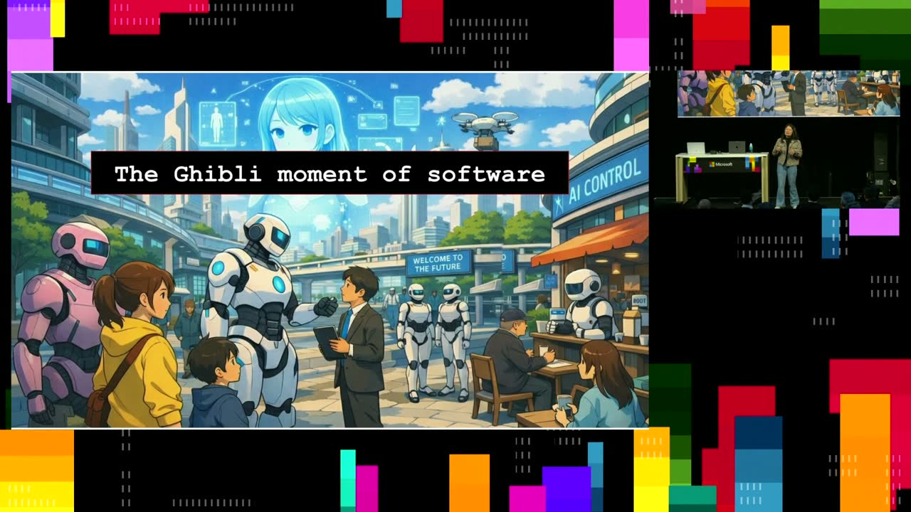
{kind=link}
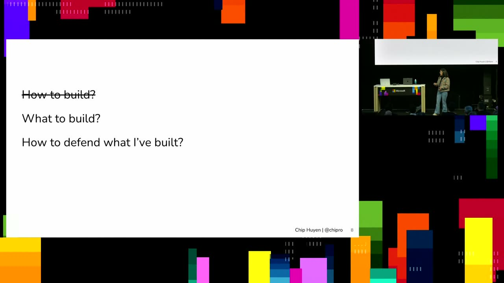
{kind=link}
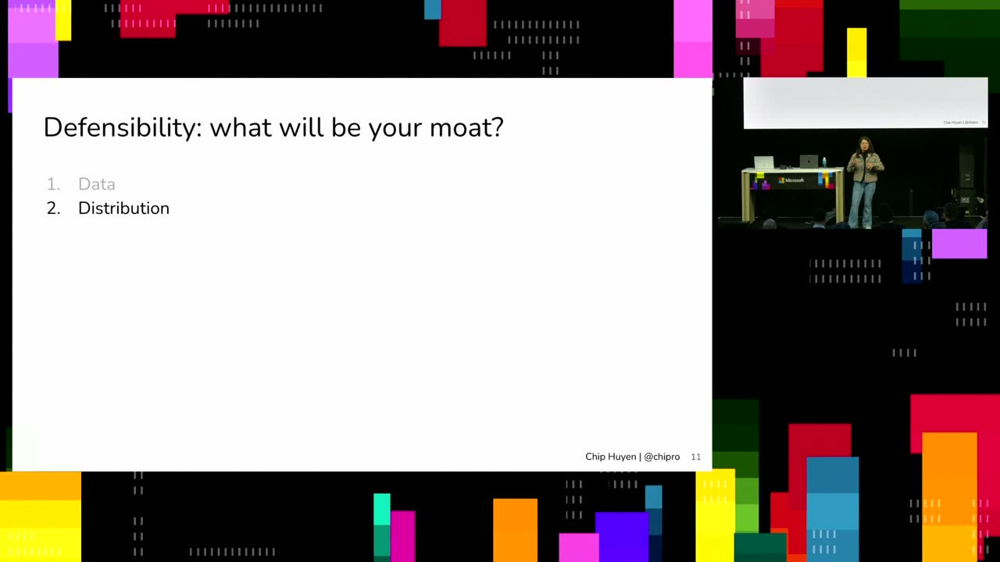
{kind=link}
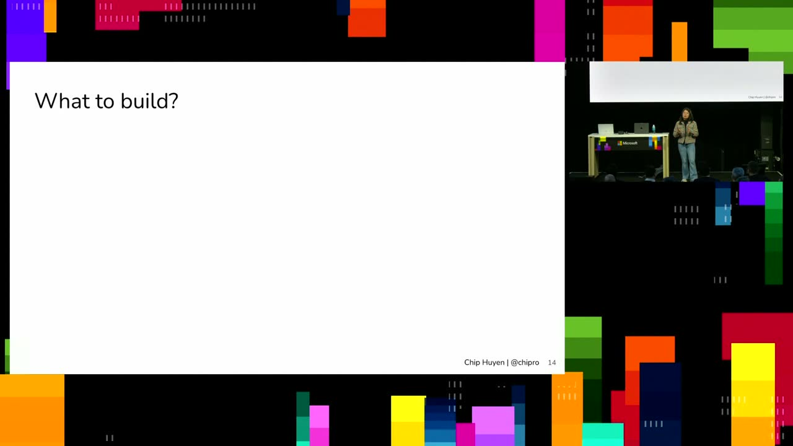
{kind=link}
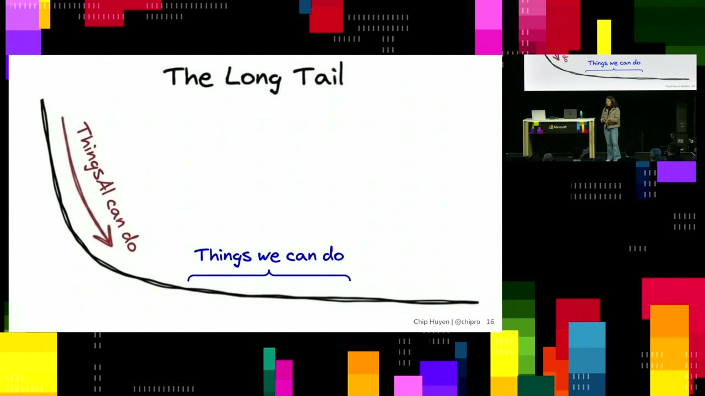
{kind=link}
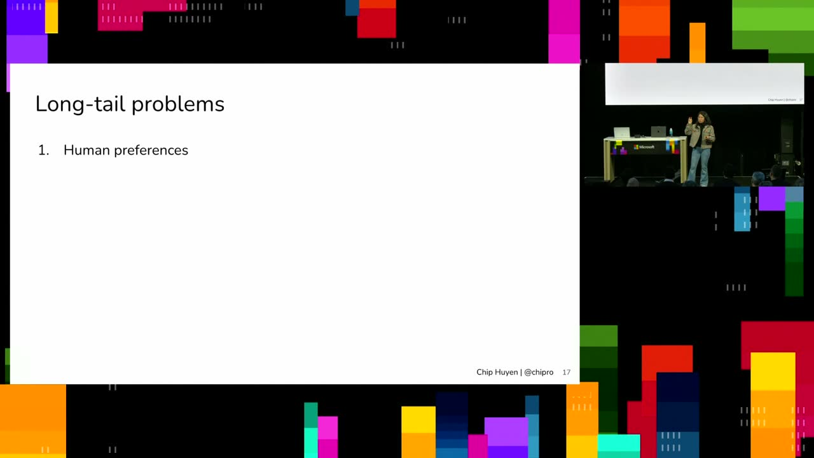
{kind=link}
{kind=link}
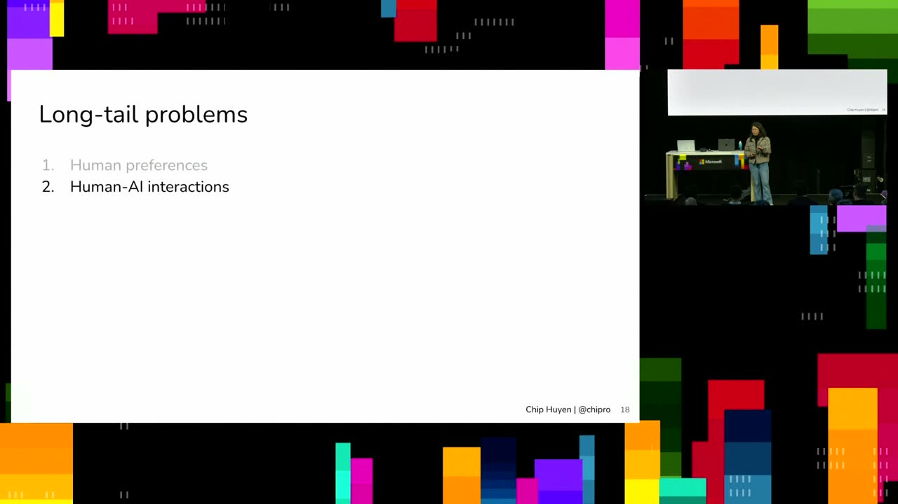
{kind=link}
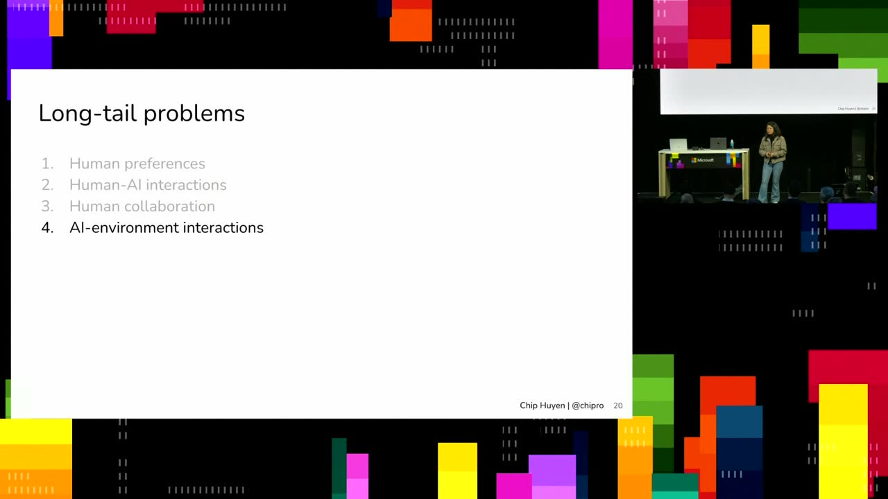
{kind=link}
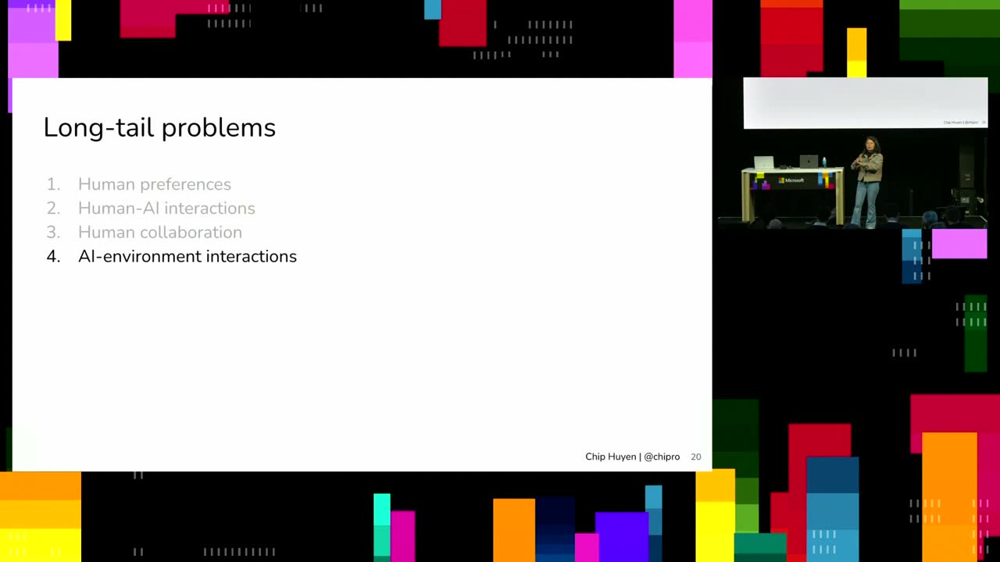
{kind=link}
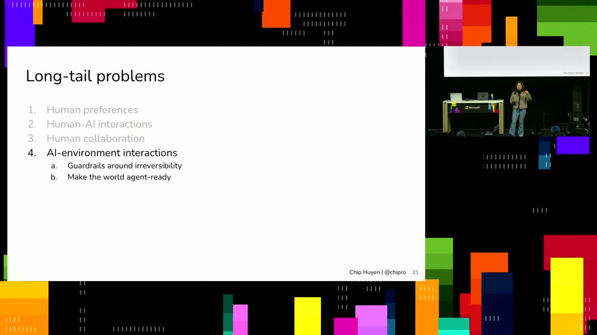
{kind=link}
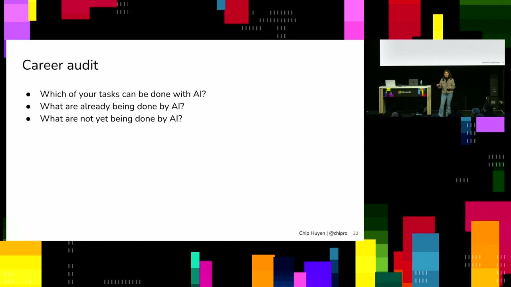
{kind=link}
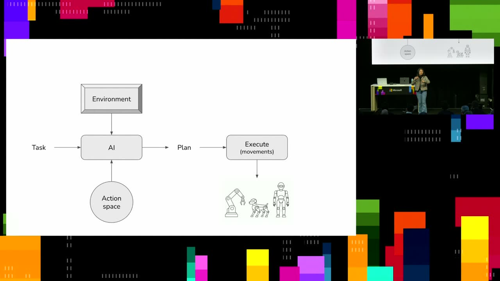
{kind=link}
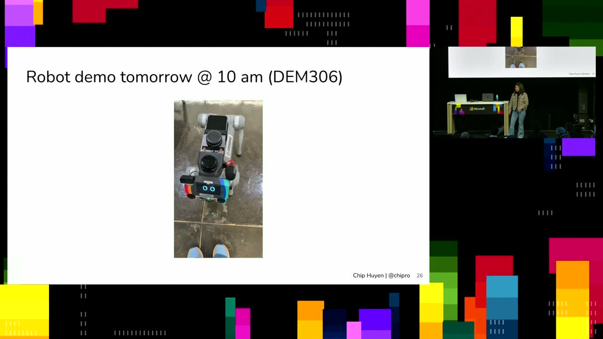
Frames around each announcement
Transcript
Show / hide transcript (60,281 chars)
[00:00:01] Hello, everyone. [00:00:03] Hey there. [00:00:04] So I am chip. [00:00:06] Thank you so much for coming to my talk. [00:00:08] I my career has been mostly with building AI systems, [00:00:12] like trying to get make AI useful in the, in [00:00:15] the real world. [00:00:16] So I started with NVIDIA and then I work on [00:00:18] Snorkel AI, which is a data company. [00:00:21] And then I start another AI infrastructure startup, which is [00:00:24] sold. [00:00:24] And since then, I'm doing a new company which is [00:00:27] in robotics. [00:00:28] Anyone here into robotics? [00:00:31] One person's. [00:00:34] So yeah. [00:00:35] So this is a bunch of like robots that I [00:00:36] work with. [00:00:37] Like this one, I'm trying to fit the ring on [00:00:39] the robot hands, which is weird because like they don't [00:00:43] quite have the same width as human fingers. [00:00:46] But yeah, so today's talk is about like software defensibility [00:00:49] because that the type of questions that have been trying [00:00:52] to like think about in the last few years, because [00:00:55] there are two things that we thought of myself as [00:00:58] being good at. [00:00:59] One is writing and the other is coding. [00:01:02] And I think that those are the top two things [00:01:05] that I could easily automate nowadays. [00:01:07] So it make me feel like, OK, so like what [00:01:10] should I do that can reasonably that I can reasonably [00:01:14] defend in the age of AI? [00:01:17] So how many people here consider yourself software engineer? [00:01:23] Wow, a lot of you. [00:01:25] How many of you are worried about AI automating your [00:01:29] job? [00:01:31] One person. [00:01:32] OK, a few more people. [00:01:34] I feel like this kind of thing, I don't say [00:01:35] out loud, you know, it's like, yes, it's like keep [00:01:37] it a secret. [00:01:39] OK, so so one thing I keep hearing people telling [00:01:43] me is that the cost of building subway is a [00:01:46] bridging 0. [00:01:47] So I keep hearing about sayings, OK, it's extremely cheap [00:01:50] right now to generate code, right? [00:01:51] You can just like get AI and it can write [00:01:53] you like an app of feature build website extremely fast. [00:01:57] So I keep hearing companies who who in the past, [00:02:00] maybe they could only create like maybe like 1020 variations [00:02:03] for AB testing. [00:02:04] Now they could generate like 1000 variations for AB testing [00:02:07] because it cost extremely cheap. [00:02:10] So it made me think about like, OK, if the [00:02:13] cost of building software is operating 0, does it mean [00:02:16] that the value of building software is also approaching 0, [00:02:20] right? [00:02:20] If the cost is 0, then the value is 0. [00:02:23] So it makes me think about like it's so it's [00:02:26] like it made me realize like, OK, what, what should [00:02:30] I be building, right? [00:02:31] Like what is the point of building anything nowaday if [00:02:36] there's no value associated with it? [00:02:39] So a few months ago, I had launched a side [00:02:42] project. [00:02:43] It's like a weekend project. [00:02:44] And I like it, It's fun. [00:02:46] It got some traction, like my 300,000 views within a [00:02:49] weekend. [00:02:50] And then within a day somebody emailed me saying that [00:02:53] I'd love what you did. [00:02:55] So I asked Clark Code to do exactly that. [00:02:58] And here's a link to the website, exactly what you [00:03:00] just built. [00:03:01] So I felt very ambivalent by it, right? [00:03:03] I was like, on the one hand, like I'm flattered, [00:03:06] thank you, but on the other hand, like, what the [00:03:09] heck, man? [00:03:09] Like it's just like lead your toe kit and like [00:03:11] copy and paste it. [00:03:13] So, so, so it makes me realize it's like any [00:03:15] software that exists today can easily be replicated, right? [00:03:19] And like, if you can ask, yeah, actually like Airtable, [00:03:21] it can build it. [00:03:22] If you actually build Arsenet, it can build it. [00:03:25] And I see there's a lot of this. [00:03:26] I'm actually building this side project. [00:03:28] It's going to kill kill by gbt.com where we can [00:03:31] vote and like which product is going to be killed [00:03:35] by by AI first? [00:03:36] I'm I'm launching it like next week, hopefully and you [00:03:38] guys can like use card codec to replicate it. [00:03:41] But but yeah, so, so much curious about like, so [00:03:44] like things yeah so, so it made me feel like [00:03:47] what excitement because like now I can build anything that [00:03:51] I want, but at the same time, like anyone can [00:03:54] build any things that I want and of course, like [00:03:57] not everything is the same, right? [00:03:59] Like people talking about like, OK, not everything can be [00:04:02] easily buildable because you cannot just build Google in a [00:04:05] weekend, right? [00:04:06] But at the same time, I see that are you [00:04:09] familiar with meter, like METR? [00:04:12] So they just study like the progress of like AI [00:04:15] automations. [00:04:16] And they do a benchmark like, OK, let's take all [00:04:19] the tasks that usually take like let's say an hour, [00:04:23] how often that AI can reliably complete the task, right? [00:04:27] So it benchmark like on the the length of tasks [00:04:30] that AI can complete about like 50% of the time. [00:04:34] And you can see this like, OK, in the beginning [00:04:37] it start very little, like a few seconds of the [00:04:39] task. [00:04:39] But now we can reliably complete task that like takes [00:04:43] like 16 hours. [00:04:44] So it's a very long horizon, extremely complicated task, right? [00:04:47] Because I feel like there were for a lot of [00:04:50] engineers, like I don't think people can just sit down [00:04:52] for 16 hours and course something extremely complex. [00:04:56] So, so yeah, so things have been getting very complex. [00:04:58] So maybe like AI cannot build Google nowaday given the [00:05:02] trajectory. [00:05:02] So this is log scale by the way. [00:05:04] But if you do like linear scale will look like [00:05:06] a very much like a exponential exponential. [00:05:09] So things like AI can at some point get there. [00:05:13] So I think it's like the Ghibli moment of of [00:05:15] software. [00:05:16] So I did anyone use a open AI to Jared [00:05:19] Ghibli picture style of yourself? [00:05:23] O so so in the AST, I feel like there's [00:05:25] a trend of like everyone using image generation to generate [00:05:29] a style of Ghibli. [00:05:30] And I was thinking that there's no way Ghibli agrees [00:05:33] with this. [00:05:34] Like there's just no way. [00:05:35] But in so at the point we think of like [00:05:37] a style is something like, if you can't describe a [00:05:40] style, it's a shorthand for the for the AI to [00:05:42] know what to do. [00:05:43] And the artists were very upset, right, because they spent [00:05:46] the whole career developing the style and we can just [00:05:48] do it. [00:05:48] And I think it's similar with software like anything that [00:05:51] exists, just make it easier for people to like shorthand [00:05:53] and build it right. [00:05:54] Maybe if they want to be something like Arsena, it [00:05:56] take me a lot of time to describe. [00:05:57] OK, here's the specs, here's the functionality, here's the workflow. [00:06:00] But if it exists, I can say, OK, let's just [00:06:02] do it like, you know, you know what it is, [00:06:04] right? [00:06:05] So, so by the act of you putting out the [00:06:07] software, you make it easier for the comparer. [00:06:09] Should I do exactly what you want? [00:06:12] So the question we think with AI is no longer [00:06:14] how to build. [00:06:15] Like if you know what you want to do, it's [00:06:16] very easy. [00:06:17] The question is like what you build? [00:06:20] And then once you build it, like how do you [00:06:22] defend it? [00:06:24] So I am curious, it's like, what do you think [00:06:28] would be the most for your product? [00:06:31] Anyone here is doing a startup? [00:06:36] So I'm curious like what do you think would be [00:06:40] the Moat for your software startup, huh? [00:06:45] Proprietary data. [00:06:46] So who you think that data is the Moat? [00:06:50] A few people. [00:06:51] So you think that if you have a lot of [00:06:53] proprietary data, compares cannot compete with you? [00:06:57] OK, what else? [00:06:57] What else would you consider like a Moat for a [00:07:00] company? [00:07:02] Huh. [00:07:04] Trust like branding trust branding. [00:07:07] It's another very interesting question. [00:07:10] Who else? [00:07:11] What else? [00:07:15] Customer service. [00:07:16] It's a human layer. [00:07:17] So when you say customer service, it's like AI agent [00:07:22] as customer service or I see interesting. [00:07:27] I feel like more and more a veer toward like [00:07:30] just not going through human service. [00:07:33] I feel like we can get away with it. [00:07:34] I would probably like try something automated, but it's interesting. [00:07:38] So the question of trust, I think it's like people [00:07:40] have been realized. [00:07:41] It's like trust is not sufficient because in in the [00:07:44] past people were lot more loyal to a product, but [00:07:47] with AI because the step change, like the improvement is [00:07:51] so significant. [00:07:52] So you can see both switch models very quickly, right [00:07:55] When charge PDF first came out, everyone tells like, OK, [00:07:57] there's no way something can compete with charge PD, right? [00:08:00] And then suddenly like cloud anthropic came out and said, [00:08:03] OK, now I can do it. [00:08:04] And then dipstick came out and everyone a lot will [00:08:06] jump to it. [00:08:06] And then dipstick turned out to not work quite well. [00:08:08] We will jump to Quen. [00:08:09] So I think like a lot of a lot of [00:08:12] the product we have seen that customer loyalty is hard [00:08:16] to compete with like improvement, like product improvement. [00:08:20] But I think I definitely agree with you. [00:08:23] This building trust is never gonna be a pain. [00:08:26] On the question of like data. [00:08:28] So data is, I usually think that like proprietary data [00:08:31] is a Moat, right? [00:08:32] Because you have a lot of data. [00:08:33] Then what? [00:08:34] Can I compete with you? [00:08:35] But then I realized given how many companies, how much [00:08:38] money companies are spending on acquiring data, then data is [00:08:42] no longer a Moat. [00:08:43] Like money is a Moat, right? [00:08:45] If you have money, you can just buy it. [00:08:47] Have you seen a lot of AI Frontier Labs buying [00:08:49] companies just to get the data? [00:08:52] Have you seen that? [00:08:53] So like if you see, if you look at the [00:08:55] Frontier Labs list of the acquiring companies, like some of [00:08:58] them acquire company, like two or three companies a week, [00:09:00] because the reason is just like acquire company so that [00:09:03] they can get data from that company. [00:09:05] So maybe the competitors do not have the data, but [00:09:07] maybe a Frontier Lab can acquire the comparison data and [00:09:10] then build something that's like work quite well for the [00:09:13] use case. [00:09:15] And it's quite interesting because given how fast people were [00:09:18] able to build a model, a new, launch a new [00:09:21] model to compete with existing existing models, it turns out [00:09:24] that the acquiring data is not a hard part anymore. [00:09:27] And if data has any more like commodity. [00:09:29] So let's say that like you have a QuickBooks, right? [00:09:31] And I say QuickBooks will never sell data to Open [00:09:34] AI, but Open AI can just go to my scale [00:09:37] AI search micro on and say, OK, now create a [00:09:39] software that looks exactly like QuickBooks, hire like 10,000 accountants [00:09:44] that do own the workflow you need as if you [00:09:46] were using QuickBooks. [00:09:48] And then use that data to train the model. [00:09:50] So people can do that pretty quickly. [00:09:52] And that's why they own this data labeling companies like [00:09:56] have revenues like a billion of dollars just because they [00:09:59] create a lot of that extremely, extremely fast. [00:10:06] Another thing that people told me about is like distributions, [00:10:08] right? [00:10:09] Especially for enterprise, let's say they have spent like months [00:10:13] and months trying to get the software into the customers [00:10:17] and they work with like Oracle and stuff. [00:10:19] I know it's very much embedded into the ecosystem. [00:10:23] It's extremely hard for people to move away from it. [00:10:28] I think it's just still a lot of validity in [00:10:30] it. [00:10:31] But I also want to ask about like, OK, how [00:10:33] about for consumer products, right? [00:10:35] And some things that's like do not require heavy integrations [00:10:38] And I was like actually do not know, right because [00:10:41] of consumer product like this. [00:10:43] And that is like a pretty much easy issue to [00:10:45] replicate. [00:10:46] And also like having a distribution as the mode also [00:10:50] make it feel a bit uneasy because like the entire [00:10:53] most strategy depends on people's annoyance, right? [00:10:57] Like something that is really hard to you so that [00:10:59] people cannot get off your platform. [00:11:02] And also another interesting model is that like, so I [00:11:05] have a friend who used to be like a partner [00:11:07] with a very big firm like PV form. [00:11:09] And he also he tried to sell to a lot [00:11:11] of manufacturers, right? [00:11:13] And if you go through the compare old school project, [00:11:15] old school approach, you have to go reach out to [00:11:18] all these manufacturers and like, OK, try to sell to [00:11:20] them. [00:11:21] And what he did was that, OK, he just bought [00:11:23] a software company that's already has a 10,000 factories as [00:11:27] a customer. [00:11:28] He was like, OK, is this software companies? [00:11:29] Is it not AI companies? [00:11:31] It's actually a lot cheaper. [00:11:32] Like if you have AI money, you can go and [00:11:34] buy this companies and that that way you can own [00:11:37] the distributions. [00:11:38] So it's like so contribution in a way can be [00:11:41] acquired with more money. [00:11:43] Another thought about is expertise. [00:11:46] So people was like OK, but I know the domain [00:11:49] the best, right? [00:11:51] I have years and years, like iterations and make it [00:11:54] the best. [00:11:55] But like expertise is so interesting because expertise, like for [00:11:58] it to be useful, you have to encode it somewhere, [00:12:01] right? [00:12:02] You don't want to be a service model where you [00:12:04] can just like use like exchange service for like hourly [00:12:06] money, right? [00:12:07] You talk to people or not. [00:12:08] So you want to just scale it. [00:12:09] So that means you have to encode that. [00:12:11] And now expertise become software and like all the workflows [00:12:15] you spend years and years design can be, can be, [00:12:18] can be just copy and like people can just use [00:12:20] that as a workflow. [00:12:22] So I think that's only one thing that I realized [00:12:24] is this like what part of like momentum? [00:12:26] So the only way to spend ahead of like customers, [00:12:29] electric competitors is just that you move faster than that. [00:12:32] Like anything like it makes a lot of pressure for [00:12:34] like a lot of companies because now you want to, [00:12:37] you want to be a product you're like committed to [00:12:40] like a never ending treadmill of like just doing faster [00:12:43] and faster than the competitors, which is like for a [00:12:46] lot of people, it's great. [00:12:47] People love it, but it's just like create a lot [00:12:51] of pressure on, on, on the part of like on [00:12:54] the part of, of like how to stay with your [00:12:57] competitors. [00:12:59] How, how do you feel so far? [00:13:00] Is this like too bleak? [00:13:05] So, so like, so here's the question like what you [00:13:08] build. [00:13:09] I think it's like a lot of form. [00:13:11] I do think it's like there's a lot of value [00:13:13] in building because buildings one thing I do spend a [00:13:16] lot of time like right now I have like both [00:13:18] cloud code and like codecs running because I feel like [00:13:21] I just like building and building things makes me I [00:13:23] feel like it makes me better problem solver like right. [00:13:26] It's like because when you build building, you don't you [00:13:28] don't build products that exist in a vacuum, right? [00:13:30] You build something to address and some, some annoyances that [00:13:33] you have. [00:13:34] So being able to like building just like help me [00:13:36] understand the problems I want to solve more and have [00:13:39] the experience of like, OK, here's a problem. [00:13:41] Here's a solution I think would work. [00:13:42] Let's let's let's build it and launch it. [00:13:44] And I put in front of users and I see [00:13:46] like what they say about it. [00:13:47] But if you want to build it as a company, [00:13:50] like as a startup, then you need to think about [00:13:52] like not just like today, but like how it's going [00:13:55] to work like 2 years from now on. [00:13:57] Because one of the case I actually like invested in [00:14:00] this company and they did great for the first three [00:14:03] years. [00:14:04] My first first three years, I grew from my 0 [00:14:07] ARR, 10 million ARR. [00:14:08] And now they just cannot, like they just don't know [00:14:10] like, OK, now we have 10 minute ARR, but then [00:14:12] they cannot get to 100 million ARR. [00:14:14] And if it's not a VC world, like it's kind [00:14:16] of stuck, right? [00:14:16] Like you can't, you're not going to be big enough [00:14:19] to go IPO, but then you can't also like then [00:14:21] what are you going to do next? [00:14:22] So like, so like, yeah, so I think it's very [00:14:24] easy to get like keep on building CLD momentum and [00:14:27] then don't know if you don't have a strategy of [00:14:29] like going big, it's hard to raise money. [00:14:33] So, so one thing, just like I do have this [00:14:35] belief that like no matter how good AI is, they [00:14:38] will always be prompt to solve. [00:14:40] Because I think it's like, no matter how good AI [00:14:43] is, I would never stop being angry at like people [00:14:45] on the Internet and I would never stop being angry [00:14:47] at like united customer service, right? [00:14:49] I mean, there's a lot of like problems that it's [00:14:52] just like AI will not solve. [00:14:54] And I do think it's like, as AI become better, [00:14:56] it expands the surface area, right? [00:14:58] As like AI allow us to build more use cases [00:15:01] as it expand like it, it might not be the [00:15:04] same problems as we had before, but I introduce new [00:15:07] problems and I want you to cover a few like [00:15:10] categories of problems if things that have emerged with AIS. [00:15:14] So before I go into that, I think I raised [00:15:16] a problem is a long tail problem. [00:15:19] It's just a long term distributions. [00:15:21] So like there are problems. [00:15:22] So like everyone can everyone face, right? [00:15:24] Everyone wants to write better emails. [00:15:26] Everyone want a lot of people want to write better [00:15:28] code. [00:15:28] A lot of people want like I know once you [00:15:31] like help with like small little things like OK, fix [00:15:34] my essay, do my homework. [00:15:36] So this are like, they're like a category of very, [00:15:39] very big problems that I do believe that a lot [00:15:41] of AI frontier labs will try to get the models [00:15:44] to do well on right now. [00:15:45] Let's look at them. [00:15:46] OK, here are the problems that face by the 99% [00:15:48] of the populations versus the problems that face maybe like [00:15:51] 1% of the populations that AI frontier labs would probably [00:15:55] focus on the ones of like 99% as the population [00:15:57] has. [00:15:58] So that's one reason why like a lot of this [00:16:01] AI labs still focus on, of on like a few [00:16:04] standard use cases. [00:16:05] And like a lot of them still focus on English [00:16:08] for many, many languages, for example, like Arabic, AI actually [00:16:11] doesn't quite work well, doesn't work quite well. [00:16:14] So I have a friend who is Iranian and she [00:16:17] told me the story. [00:16:18] She's the professor at CMU. [00:16:21] So she does a lot of work with like AI [00:16:24] and she tells the story of like, because she speak [00:16:27] Parsi, it's just a language Farsi, right? [00:16:30] Sorry, I feel very stupid right now. [00:16:33] You're Farsi. [00:16:34] And and she has an issue of like her friends [00:16:37] would ask her to explain a sentence like an idiom [00:16:40] in Farsi. [00:16:41] And she explains a sentence that like, oh, that meant [00:16:44] like that. [00:16:44] And that friend was like, no, you're lying. [00:16:46] Because apparently ChatGPT gives a different answer to that to [00:16:50] that to that different answer. [00:16:52] And the friends somehow trust ChatGPT more. [00:16:55] Even my friends like, no, no, I am correct. [00:16:57] But just because ChatGPT this doesn't do very well in [00:17:00] like Farsi language. [00:17:02] So, so yeah, so they allow so and so work [00:17:04] with some a lot of the voice chat bot. [00:17:06] And another problem with voice chat bot is that you [00:17:09] have to like respond very fast, right? [00:17:11] Like a human, human to human interactions. [00:17:14] So latency is like you want it to be like [00:17:16] under like 800 milliseconds for it to be like to [00:17:19] be like a good reasonable natural conversations. [00:17:23] But like for voice chat bot, it actually go through [00:17:25] three steps. [00:17:26] So first step is to be able to translate from [00:17:29] audio into text, right? [00:17:31] And then you send the text to an LM to [00:17:33] get back to the response. [00:17:34] And then you get you send the response to like [00:17:37] text to speech, to synthesize the voice to send it [00:17:41] back to users. [00:17:43] So a challenge we we have was that like this [00:17:45] voice chat bot work really well for English because like [00:17:48] the speed of like synthesizing English is pretty fast, but [00:17:52] for Arabic or Russian extremely slow. [00:17:54] Like it's like, so it's make like it's to make [00:17:56] it really, really hard to create natural voice chat bots [00:17:59] for different languages. [00:18:00] So, so yeah. [00:18:01] So, so I think I see for a lot of [00:18:02] long tail problems. [00:18:03] I do see the AI labs. [00:18:05] It's not quite doing it and it doesn't mean that [00:18:08] they're not doing it like 2 years from now on. [00:18:11] But I can see that like if you can pick [00:18:13] a problems that is, I think of them as big [00:18:16] enough to be profitable, but not big enough that AI [00:18:19] Frontier labs didn't want to take the lunch. [00:18:22] That's the kind of thing. [00:18:24] OK, so so here's some of the long tail problems [00:18:26] I could find. [00:18:27] Like I thought it's interesting. [00:18:29] One is human preferences. [00:18:31] Are you here familiar with IOHF? [00:18:34] Have you heard of the term reinforcement learning by human [00:18:37] preference? [00:18:40] You heard the term so yeah. [00:18:41] So like in the early day of LLMS, like in [00:18:45] the early day of GBT 4 and it's early day [00:18:48] of this models, ILHP is one of the most are [00:18:52] the most popular terms that people want to understand. [00:18:57] So the way the model trained, they trained the model [00:19:00] is that they have, they want the AI to go [00:19:03] to Jared responses that humans prefer, right? [00:19:06] So it has so it wouldn't give a prompt and [00:19:09] they give like 2 responses side by side and then [00:19:11] the human will pick, OK, this is the one to [00:19:14] I like more. [00:19:15] And then you will use that to train the model [00:19:18] to, to notch it towards sharing more like better responses. [00:19:21] So a challenge with that is that like it's trying [00:19:24] to encode human preference into one equations. [00:19:28] So it assume that there's some like universal preference, right? [00:19:31] Like like everyone somehow like prefers the same thing. [00:19:34] So when I was going through the Anthropic IHF data [00:19:36] set limit online, I realize it's like a lot of [00:19:39] what people consider the winning responses. [00:19:42] Actually, I do not prefer the winning response. [00:19:44] I actually prefer the losing responses. [00:19:46] Just like somehow the note is like Mark is not, [00:19:49] not not better. [00:19:51] So human preference are extremely hard and it requires to [00:19:55] understand users very well. [00:19:57] So going back to the voice chat bot, right? [00:20:00] So, so, so humans actually have a very different preference, [00:20:03] like how fast the other person responds. [00:20:05] So I'm from Vietnam. [00:20:07] So in Vietnam people actually like prefer the other person [00:20:11] to give some time before respond. [00:20:14] So, so I have a niece who is like 10 [00:20:16] years old and I have my godmother who's like 70 [00:20:19] years old, American woman. [00:20:20] So I tried to put them on a call and [00:20:22] it was like the worst experience. [00:20:24] It was so, so the thing so like when my [00:20:26] godmother, she tried to be friendly, right? [00:20:28] So, so when my niece took time to respond, my [00:20:31] godmother was like, OK, she is shy, she doesn't know [00:20:34] how to talk and she didn't want the awkward silence. [00:20:37] So she just kept like, if the my niece like [00:20:38] went a little bit long and didn't say anything. [00:20:41] My godmother was like kept on asking questions, right? [00:20:43] And then after that my niece told me it's like, [00:20:46] wow, she didn't give me any time to respond at [00:20:48] all. [00:20:48] So it turns out it's actually a well known study [00:20:51] about it. [00:20:52] It's about like in the West, people actually like prefer [00:20:55] conversation respond rate to be very fast. [00:20:57] Maybe it's only 80 milliseconds. [00:20:59] Like if I finish, if you finish talking, you expect [00:21:02] me to respond very, very fast. [00:21:04] Whereas in the, in the some culture like Vietnam, like [00:21:07] after you finished, I finished you finish talking like you, [00:21:10] you give the person maybe like 200 milliseconds so that [00:21:13] you can so that the other persons can make sure [00:21:16] the other person has finished and formulates a response. [00:21:19] So all of these nuances you need to be able [00:21:21] to understand the customers. [00:21:23] So to build a product that work quite well. [00:21:27] So I guess part of this expertise, expertise that part [00:21:30] of the mode like it's more like user understanding, understanding [00:21:34] what who you're building for. [00:21:36] Another thing is like the human AI interactions and since [00:21:40] we had Microsoft built, I want to talk about like [00:21:43] a lot of like a lot of you are like [00:21:45] software engineers. [00:21:46] How many of you are using AI to write code [00:21:48] right now? [00:21:50] Almost all of you, yeah. [00:21:52] How many of you using it via the terminal? [00:21:55] Some of you are right. [00:21:57] How many of you use it for your like ID [00:22:00] like how many use both? [00:22:03] OK well most of you use both. [00:22:05] So when I was looking it's like terminal is a [00:22:07] very interesting product. [00:22:09] So terminal I think of it as a more legacy [00:22:12] product because do you think that terminal is easy to [00:22:15] use or hard to use? [00:22:18] Who think is terminals are easy to use one person, [00:22:21] right? [00:22:21] Few people. [00:22:22] So terminal as like so So when I start using [00:22:24] terminal for like writing code, it's like pretty annoying, right? [00:22:27] It's like it's very hard to move the cursor around [00:22:30] you kind of just like throw an image in there. [00:22:33] Like it's like if you see like a user build [00:22:34] website, it's like, OK, this is like horrible interface. [00:22:37] I want I just see that like this is terrible, [00:22:39] but I cannot easily drop an image in there. [00:22:41] And it's make me think like, why are terminals so [00:22:44] hard to use? [00:22:45] And it's make me think of like, OK terminals, actually [00:22:47] very powerful terminals like the control plate for the computer, [00:22:50] right? [00:22:51] It's very easy to do stupid thing there. [00:22:53] Like you can remove RF like and remove the whole [00:22:55] operating system and you would be like in trouble. [00:22:58] So terminals in a way was designed to be hard [00:23:00] to use on purpose so that people who don't know [00:23:03] what they are doing don't do something stupid by accident, [00:23:07] right? [00:23:07] So ID, on the other hand, was just like makes [00:23:10] a lot easier to use. [00:23:11] But then I think like I thought about it, it's [00:23:14] like, there's not really a reason why they need to [00:23:16] be in a separate product, right? [00:23:18] But one of them is like ease of use and [00:23:19] the other like make it like harder to control. [00:23:22] So so I think of like, what if we have [00:23:24] something that's like as a hybrid? [00:23:26] And I think it's like a lot of those codecs [00:23:28] desktop or like cloud code desktop or like the different [00:23:30] desktop from like design should be a mixture of it, [00:23:33] right? [00:23:33] Like it has an ease of use of like ID, [00:23:35] but then Even so, like allow it to access a [00:23:38] file systems the ways that a terminal can so that [00:23:41] it they give them more power of that. [00:23:44] And another thing is about people have quickly realized that [00:23:48] like which also give like we quickly realize this is [00:23:51] like, have you ever walked around with your computer open [00:23:55] because of code Codex is running on the computer? [00:24:00] Yeah, I think I walk around the airport and when [00:24:01] I see somebody walking around the computer open, it's like, [00:24:03] OK, that person has something running. [00:24:05] So there's no reason why you need to do that, [00:24:08] right, Because everything about all the work is being done [00:24:11] on the cloud. [00:24:12] Like there's no reason why you need to keep the [00:24:14] computer open to run it. [00:24:16] But then so there's a lot of tools to make [00:24:19] it easy for you to access, to make your things [00:24:22] run without your computer. [00:24:24] So somebody makes the open client early day. [00:24:27] A lot of people bought some MacBook mini. [00:24:29] So the idea is that you have a server that [00:24:31] hosts your agent so that you can just leave it [00:24:33] run all the time. [00:24:34] So you don't need to do the computer, But and [00:24:36] after that it creates the whole challenge of like, OK, [00:24:39] you need to like create a sandbox. [00:24:41] You need to like to recreate the environment. [00:24:44] So now you have to be on the cloud so [00:24:45] you can access from a different device. [00:24:47] And there's some people who create like mobile apps, so [00:24:49] you can control the cloud code or codecs from the [00:24:51] mobile phone. [00:24:52] Somebody like actually one of my fun project was like, [00:24:54] I can actually like control my cloud code from my [00:24:57] S or my my telegram bot. [00:24:58] So you can send me like message it, OK, now [00:25:00] it's done. [00:25:00] They ask me, it's no question. [00:25:01] They go, OK, do it, do it. [00:25:03] So I think like all of that is like human [00:25:05] interactions. [00:25:05] It's like quite interesting. [00:25:08] Another challenge, another example with like GitHub. [00:25:12] So you, I imagine just like a lot of you [00:25:15] pre use GitHub for like code review collaborations, right? [00:25:19] And one thing I noticed with like code review is [00:25:22] that people don't review code the old way anymore. [00:25:25] So I worked with a team recently and the most [00:25:28] senior person told me that he still review on the [00:25:31] code line by line, right? [00:25:33] Which is like shocking to me because it's like sounds [00:25:35] so painful nowadays. [00:25:36] Like I don't read code line by line anymore, right? [00:25:38] This is just too painful. [00:25:40] But he said he did it because he want to [00:25:42] go to give feedback to junior engineers so that they [00:25:45] can learn, OK, this is not good or not bad. [00:25:48] And then I went to the engineers. [00:25:49] I was like, OK, do you read his reviews? [00:25:53] And they were like, no. [00:25:54] And the reason he's told me, they told me that [00:25:57] because the feedback is not actionable because the senior engineer [00:26:01] will say OK, do not write this FL function like [00:26:04] this, write like that. [00:26:06] But then those junior engineers are not the people who [00:26:09] write the code, right? [00:26:10] Like it can't just, it can tell AI like, OK, [00:26:12] don't write this thing, but it's not going to be [00:26:15] applicable for the future. [00:26:16] So once the engineers want feedback on it's like how [00:26:20] to write the instructions for the for the code. [00:26:24] And it's something I feel like GitHub is not quite [00:26:27] designed for right now, right? [00:26:28] Because I think I with the new AI coding, the [00:26:31] artifact is no longer the code like GitHub was designed [00:26:34] around code as the main artifact, right? [00:26:36] Like you, you have the code base. [00:26:38] People like protect the code base. [00:26:43] The code is the main artifact. [00:26:44] But like nowadays with AI coding, like the main artifact [00:26:47] actually is the instructions. [00:26:48] Like how do you like the specs? [00:26:50] I think some people call it specs driven development. [00:26:53] It's like, how do you like, if you have a [00:26:55] good specs, it can give it to AI, it can [00:26:57] generate code maybe even better than like what you currently [00:27:01] have. [00:27:02] So, so yeah, so, so I think it's a lot [00:27:04] of work, like thinking about designing like, OK, what could [00:27:07] be the workflow for us to work with AI so [00:27:09] that it can be more meaningful because a lot of [00:27:12] the workflows that we have nowadays are legacy. [00:27:15] So I guess it's like also part like human collaborations. [00:27:17] It's like, how do we get different people to work [00:27:20] on a code base effectively with AI and the loop [00:27:24] as well. [00:27:25] And another category of proof of problems is extremely exciting [00:27:30] is the human AI environment interactions. [00:27:33] So to make AI work better in production, right? [00:27:36] One way to go is to make AI better and [00:27:39] do things better. [00:27:41] Another way to go is to make the world an [00:27:43] easy environment for AI to operate int. [00:27:46] So I do work also like one thing with AI [00:27:49] coding is that people have noticed that AI works a [00:27:52] lot better with new code bases, right? [00:27:54] Like if we have a new code base, AI can [00:27:56] just like do things. [00:27:57] It also work a lot better with modular code base. [00:28:01] Like OK, if you get it's like, OK, just build [00:28:03] this new functions. [00:28:04] It's a lot easier than trying to fix the old [00:28:06] code base. [00:28:06] So there's a whole new category of like consulting firms [00:28:10] that like go and retrofit the big existing code base [00:28:14] to make them more more friendly to like AI coding. [00:28:18] So make it more modular with like different like separate [00:28:21] and massive mono repo into like smaller repos and things [00:28:24] like that. [00:28:25] And another example is like they also like API. [00:28:29] So in the past, like a lot of the tools [00:28:31] and apps were built for humans and what humans want [00:28:34] are like are like G or like the GUI, right? [00:28:36] Like the graphic user interface, because humans were very visual. [00:28:40] We want to go to like if you go to [00:28:42] Salesforce, we want to open the website, We go and [00:28:44] like see, oh, like here's the button we want to [00:28:46] click and we want the color to look nice. [00:28:48] We want things to represent it. [00:28:49] But AI actually do not, doesn't do very well with [00:28:52] like on the visual, right? [00:28:53] Like if you ask AI to do Salesforce thing, you [00:28:55] would really want to call a bunch of like API [00:28:58] functions. [00:28:58] So we see that a lot of like companies like [00:29:01] trying to move a lot more of their design into [00:29:04] like API design instead of like the GUI design. [00:29:08] And I think it's very curious to see like the [00:29:11] usage of like for instable, like let's say you have [00:29:13] a, a tool like Salesforce, you can see there's a [00:29:16] usage and a Salesforce, how much of that was used [00:29:18] by human and how much is used by you can [00:29:20] see the distribution changes like a lot like over time. [00:29:24] Another thing, more physical world. [00:29:26] So I work a lot with robotics nowadays and a [00:29:28] lot of time people, a lot of the argument people [00:29:31] have against general purpose robot is like, why do we [00:29:34] need a robot that can do everything and work everywhere [00:29:37] instead of just change my house or change the road [00:29:40] to be better, like easier for robots, right. [00:29:43] So one example is like, it's a food delivery robot. [00:29:46] Do you know this little food delivery robot that like [00:29:49] move around, I think in the South, but you see [00:29:51] them a lot. [00:29:52] They're very cute. [00:29:52] They're very tiny. [00:29:53] They shot like this. [00:29:54] So you can put so that you can put the [00:29:55] foot inside and it take you to your home and [00:29:57] open it. [00:29:58] And it's, it's, it's adorable. [00:30:00] So I was talking to the team as asking like, [00:30:02] so, So what is the weird challenge you had with [00:30:05] this robot? [00:30:06] And they were like, Oh, the biggest challenge was the [00:30:08] robot couldn't cross the street. [00:30:10] So, so when the, when the robot go in the [00:30:12] street and it need to like the light to turn [00:30:14] green and a lot of street light need to press [00:30:16] a button so that you so that the light can [00:30:18] turn green. [00:30:19] But like the robots do not have arms. [00:30:21] It's very tiny. [00:30:22] So, so we cannot press a button to like cross [00:30:25] the street. [00:30:26] So somebody has an interesting innovation of like, if the [00:30:29] robot can go up to a pedestrian and ask the [00:30:31] person, hey, can you press the button for me? [00:30:34] There was some video of it online. [00:30:35] And the pedestrian was like, what is happening? [00:30:37] Like this robot asking me to do manual labor for [00:30:39] it, like actually be asking you to do things, not [00:30:41] the other way around. [00:30:44] But yeah, so so but like he told me, it's [00:30:45] like actually some cities they have this kind of thing [00:30:48] of like they called building that street light API. [00:30:50] So that's all this robotics company can actually access the [00:30:53] city street light and they can tell it when the [00:30:55] lights on the turn green. [00:30:56] And instead of pressing the button for the light turn [00:30:59] green, you can actually call the API to turn the [00:31:01] light green. [00:31:02] So that's another example of like getting the world to [00:31:05] be more AI friendly long term. [00:31:07] I think this is a whole field of it. [00:31:09] I think that not that we are still very early, [00:31:11] because we still don't quite know what use cases are [00:31:14] going to be possible and how we can make the [00:31:17] world better for it. [00:31:20] Another thing is it's still pretty important for the robot [00:31:23] to operate in the real world. [00:31:25] It's like irreversibility. [00:31:28] So recently Cloud Code actually deleted my database. [00:31:32] So so I asked you to do an app and [00:31:35] it once you like deploy on a port like on [00:31:37] a it's like a docker post grade port and it [00:31:40] was and have another app only using that port. [00:31:44] So Clark was like, I saw that the port is [00:31:46] taken. [00:31:46] Let me clear it so that we could deploy this [00:31:49] app and then it completely deleted the other post grade [00:31:52] database like wow, smart. [00:31:54] So, so I was mighty amused, but I was not [00:31:57] frustrated because I mean, I have a backup, right? [00:32:01] So, so it was like, but it could happens, right? [00:32:03] So for a lot of things that happens in on [00:32:05] your computer, there's like a way for you to revert [00:32:09] what happened. [00:32:10] Like git is great for it. [00:32:11] Like if you submit a PR, like make a committee, [00:32:14] don't like reverse is the old commit. [00:32:16] But for a lot of use cases, you don't have [00:32:19] that luxury. [00:32:20] So let's say you ask an AI agent to like [00:32:22] submit a form right after you submit the form, maybe [00:32:25] it's a form like the data now lives in somebody [00:32:27] else's server. [00:32:28] You cannot undo it unless you ask the server, the [00:32:31] form owner to delete it for you. [00:32:34] So you don't have that luxury. [00:32:35] Like you cannot just like transfer money to another bank [00:32:38] account and then ask the bank account to like transfer [00:32:40] it back. [00:32:40] They might. [00:32:41] But if they are like a scam, the scammer they [00:32:43] really want, right? [00:32:44] So there are a lot of like things that like, [00:32:47] as we give AI more power, more tools, it's just, [00:32:51] it's just the risk is just higher. [00:32:54] So we need to design the whole system around like [00:32:57] how to make it very, very hard for AI not [00:32:59] to make mistakes because mistake can be very costly and [00:33:03] not reversible for like many, many use cases. [00:33:05] And especially like working robotics, it's like important, more important [00:33:09] than ever because like, if like a robot step on [00:33:11] a choice, I don't think we can just like revert [00:33:13] that, right? [00:33:13] Like the choice already heard. [00:33:15] So, so actually like one of the robotic companies I [00:33:18] work with is that one use cases is that like [00:33:20] they get asked for a lot. [00:33:22] It's like elderly care, right? [00:33:24] I'm not sure sure any one of you have like [00:33:26] have deal with like hourly care. [00:33:28] It's extremely expensive. [00:33:29] Like some people pay like $20,000 a month like to [00:33:32] like take care of like an elderly parent. [00:33:34] So, so the need for it is like very high. [00:33:37] And but like hourly care has a thing. [00:33:39] It's like it's, it's scary, right? [00:33:41] But because a robot is heavy and robot has very [00:33:44] low batteries life. [00:33:46] So like for example, like have you seen the unitary [00:33:50] G1 robot? [00:33:51] It's like, yeah, high, right. [00:33:52] So it's like 80 lbs. [00:33:54] So it's like it's metal, right? [00:33:56] Imagine that falling on you. [00:33:58] That is not that does not feel good. [00:34:01] And you can do a lot of things to help [00:34:03] with it, but like one failure most is quite dumb. [00:34:05] It's like this battery just dies. [00:34:07] So let's imagine that the boys doing some walking, right? [00:34:10] And then the battery just dies. [00:34:11] So the board like mid action can just like flop [00:34:14] over. [00:34:15] So it's quite quite challenging. [00:34:16] So like we're doing like things. [00:34:18] Oh, do you know about the one wheel accident? [00:34:20] Do you know the one wheel? [00:34:23] The one just like you have one wheel and it [00:34:25] can like go and drive around. [00:34:26] It's like it looks very dangerous but very cool. [00:34:29] O they have one failure mode just like got them [00:34:31] sued a lot. [00:34:33] It's just like if you are on the wheel and [00:34:35] the battery die, it will just fly over there because [00:34:39] we're just stuck there. [00:34:40] So that could happen with robots, let's say the robot [00:34:43] do a lot of actions and the battery die, it [00:34:46] will just have no control over itself. [00:34:48] So there are a lot of toolings work to make [00:34:51] it safer, maybe detect when the battery is maybe low, [00:34:55] then you don't attempt any complicated actions. [00:34:59] Or cell charging is a very important feature so that [00:35:01] we develop so that if we know it's robot thing, [00:35:04] OK, if we want to go our battery, let's move [00:35:06] back to the base. [00:35:08] And so there are other rules that we can do [00:35:10] like around safety with how much time do we have [00:35:12] left? [00:35:15] Yeah, yeah. [00:35:16] So I think there's a lot of problems that we [00:35:19] can build for AI with AI, Like I'm actually pretty [00:35:22] excited because one thing I realized is like with AI, [00:35:24] I get to build more things because now I do [00:35:27] not have to do a lot of boring stuff because [00:35:29] it's focused on like thinking about, OK, what kind of [00:35:32] new things, new problem I want to solve. [00:35:34] And a lot of this boring stuff like to be [00:35:37] fair, like I actually do not like manual writing code [00:35:41] because in college, one thing I really hated what virtualizations, [00:35:45] right? [00:35:45] Like you have to do something is OK, you have [00:35:47] to make it like super fast or like writing else [00:35:49] function. [00:35:50] And never found that very, very exciting. [00:35:52] But now with AI, a plate code now with AI, [00:35:54] we can do that a lot faster. [00:35:57] But so when we talk about a software defensibility for [00:35:59] the product. [00:36:00] But another question is that I also think a lot [00:36:02] about is like how to make myself more defensible in [00:36:05] terms of AI, right? [00:36:06] Because like how, how do I make sure that like [00:36:09] I can learn the skills that AI want automate. [00:36:13] So in the early day of ChatGPT, one thing that [00:36:15] I just spent time on, am I good? [00:36:17] Love to like learn more from like people like how [00:36:20] they do it is what I call like a career [00:36:22] audit. [00:36:22] So for the whole week actually went through like note [00:36:26] down everything that I did it and I try to [00:36:29] think of like, OK, what can this thing be automated [00:36:32] by AI, right? [00:36:33] If it can, is there someone already doing it or [00:36:37] it cannot be automated by AI or if it does [00:36:40] not exist yet, then maybe I can build it. [00:36:44] So they give me a lot of ideas and so [00:36:46] give me a better understanding of. [00:36:49] So we will call this a term of like AI [00:36:51] exposure, like what percentage of your job is exposed to [00:36:55] AI And the higher the percentage like the higher chance [00:36:58] of your your job being automated. [00:37:01] So yeah, I'm a bit curious to see like how [00:37:03] it will approach that. [00:37:06] So I think like just to bring it home, I [00:37:08] think about like any software that exists can be replicated. [00:37:12] And so I spent the last two years similar company [00:37:15] to think about like, OK, if that's the case, maybe [00:37:18] I should like, should I go like beyond software? [00:37:22] So I think of AI agent as AI agent, it [00:37:24] should perform actions, right? [00:37:27] In the earliest, in the simplest form of action. [00:37:30] It's just like token, like Jared's the next token, which [00:37:33] is the early day of like ChatGPT, like LLM, right? [00:37:36] It's just like give one Jared like 1 token after [00:37:39] another. [00:37:39] Should I turn to an essay in e-mail question answering [00:37:43] And then the next, the next category, next level of [00:37:46] like actions are like digital actions. [00:37:48] Right now the agent can do fancy things. [00:37:50] It can read file, It can write into file, which [00:37:52] is like important for coding. [00:37:54] It can call different APIs from get up API, It [00:37:57] can call. [00:37:58] It can call like image generation API. [00:38:00] It can call whatever the banking or like internal API, [00:38:03] external API. [00:38:04] It can do search, search, very important digital action. [00:38:08] I think this is the next tier. [00:38:09] I believe it's a physical actions. [00:38:12] So for example, like now instead of like imagine, right, [00:38:15] imagine that you, you have a, you have an agent [00:38:17] that like running some code, maybe like open claw or [00:38:20] something on the terminal. [00:38:22] And it's suddenly it takes like, OK, for this to [00:38:25] do complete this task. [00:38:27] Maybe I need to, I need to build this small [00:38:30] things and it can run out and like buy it [00:38:33] or it can do like, OK, I want to do [00:38:35] this task like hosting an event. [00:38:38] Maybe you can think, OK, for hosting event, I can [00:38:40] create a guest list. [00:38:41] I can invite the guest, but I also need to [00:38:43] go out and buy some like plates. [00:38:45] Like if you can like sense, like get some robots [00:38:48] and do this physical actions, that could be super cool. [00:38:51] So I do think it is the next another layer [00:38:53] of like action in the real world like you do [00:38:55] physical actions. [00:38:56] And I do think of this like physical AI agent [00:38:59] actually do not look different from the AI agent that [00:39:02] we know today. [00:39:04] We've got an agent it's anything that can interact with [00:39:06] the environment, right? [00:39:08] Take it back from the environment and perform actions on [00:39:10] it. [00:39:11] So according agent, the so environment here is like the [00:39:15] computer, right? [00:39:17] And the action you can do is like read file, [00:39:19] write file, edit. [00:39:20] So it can perform actions, it can perform action in [00:39:23] the environment by making changes to the file. [00:39:26] It can get feedback from the environment. [00:39:29] First of all, it can try to run the file, [00:39:31] try to see if it compiles, to see it's like [00:39:33] it passed a test. [00:39:36] So that's how like organization work. [00:39:38] And it's the same thing with like physical agent, but [00:39:42] now the environment is physical instead of just like purely [00:39:45] digital. [00:39:46] And the action here is more physical motions like walk, [00:39:50] pick up things, placing things, pushing, pulling and AI. [00:39:54] We have seen that it has worked quite well with [00:39:56] reasoning, right? [00:39:57] With AI visual AI agent, we can see you can [00:39:59] give it a task, It can reason through step by [00:40:02] step how to accomplish the task, right? [00:40:05] Like, OK, if it wants to build this app first [00:40:07] I need to like create a database. [00:40:08] I need to like build this work. [00:40:10] I need to like I need to. [00:40:13] Write the script and things like that and you can [00:40:15] do anything. [00:40:15] You've seen it. [00:40:16] Like AI can do the same thing for a lot [00:40:18] of the tasks in the real world. [00:40:19] Let's say if you ask me to like do laundry, [00:40:22] you can first thing, OK, first I need to collect [00:40:24] all the clothes. [00:40:25] Second, I need to like take them to the washing [00:40:28] machines. [00:40:29] I can do a lot of random things. [00:40:31] So I think it's the reasoning part is like it's [00:40:34] pretty good. [00:40:35] I do think I have pretty strong convictions that AI [00:40:38] is pretty good reasoning. [00:40:41] AI need to give it a physical understanding because I [00:40:44] need to go through like for digital digital AIA lot [00:40:47] of the product, a lot of environments are very well [00:40:50] described with documentations. [00:40:52] Not everything is like a good documentations, but ideally a [00:40:55] lot of AP is, you know, like what what endpoints [00:40:58] you can call right, like you notice, like what parameters [00:41:01] it expects you notice like, OK, here's the error code. [00:41:04] You know what that means. [00:41:05] But for physical world, we don't quite have that nice [00:41:09] description of the world. [00:41:11] Like there's no, there's no documentation about like how to [00:41:15] handle an egg, right? [00:41:16] There's no one to say, OK, if you put this [00:41:18] much force into the egg, it will break. [00:41:21] Or like if you, if you like, put the legs [00:41:23] this way, you're going to fall. [00:41:25] So there's not good description of the like physical environment. [00:41:29] So that's the part that we need to teach AI. [00:41:31] Like we humans, we know, we learn how to operate [00:41:34] in the real world to like try an arrow, right? [00:41:36] For a child, it takes like like a long time, [00:41:39] maybe a year or so just to learn just what [00:41:41] to walk, like learn to control the muscles, the joint. [00:41:45] We don't have the information encoded, you know, encoded anything. [00:41:49] Like that's why there's a lot of effort going to [00:41:51] what is called a word modelling, like trying to model [00:41:54] the world so that we can teach AI how to [00:41:57] understand and operate in it. [00:41:59] But yeah, so I'm very excited about it. [00:42:01] So we actually have a, one of the companies that [00:42:04] I work with have a demo tomorrow for the robots. [00:42:07] They have this, this dark robot. [00:42:09] Unfortunately, they they kind of spare a humanoid A humanoid [00:42:13] are really cool to to to watch. [00:42:16] But yeah, unfortunately I think the docs are also very [00:42:19] cute. [00:42:20] Yeah, if you want to come for it and if [00:42:22] you want to talk about robot, get in touch. [00:42:26] I'm talking more about I'm trying to write more about [00:42:29] software defensibility and AI for robotics in general. [00:42:32] Yeah. [00:42:32] Thank you so much, everyone.